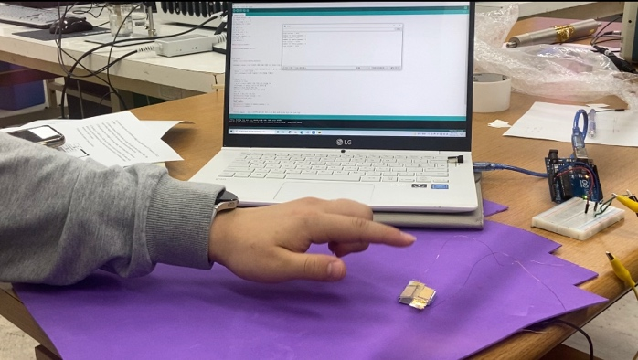
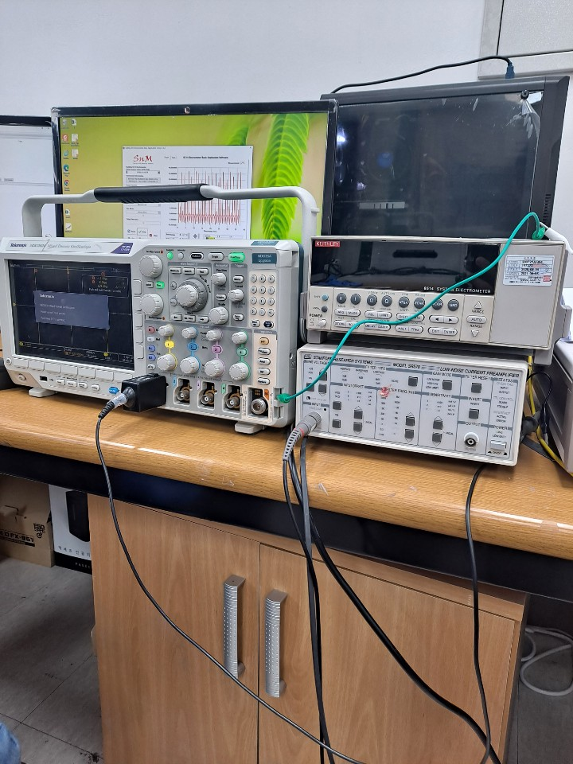
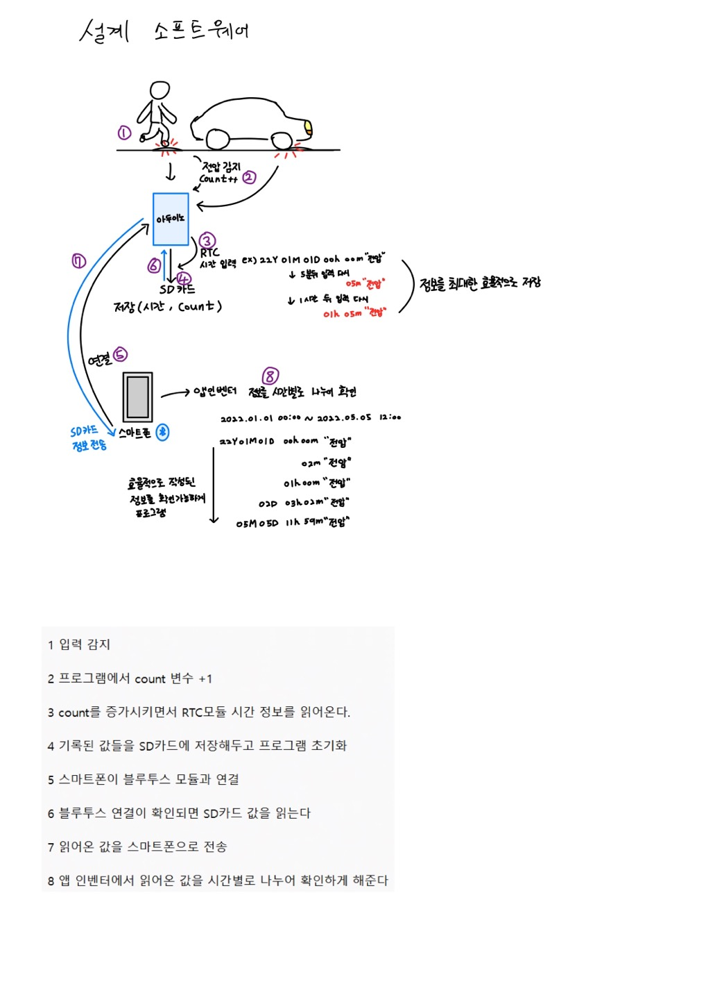
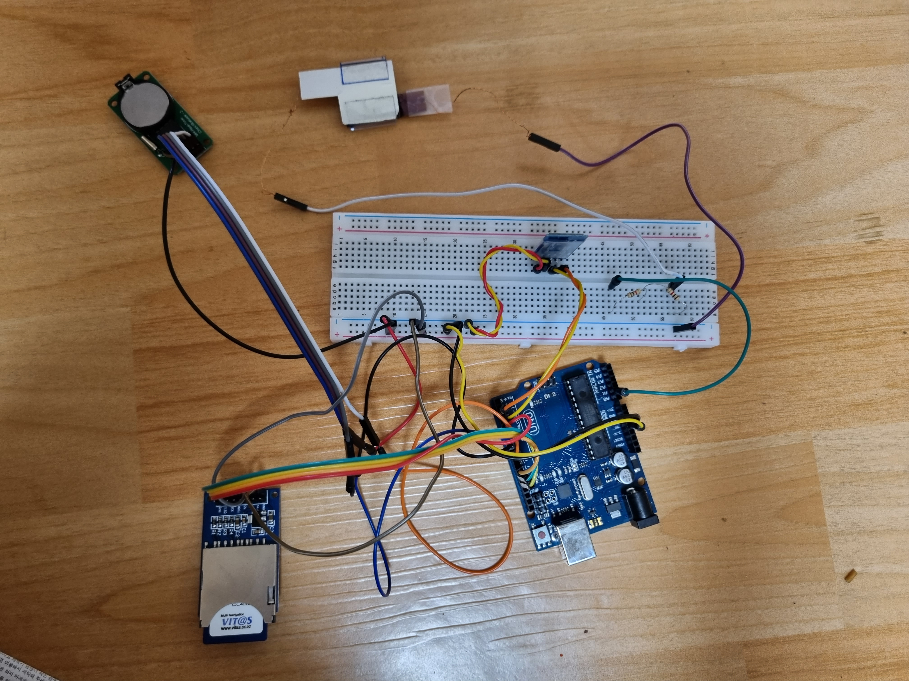
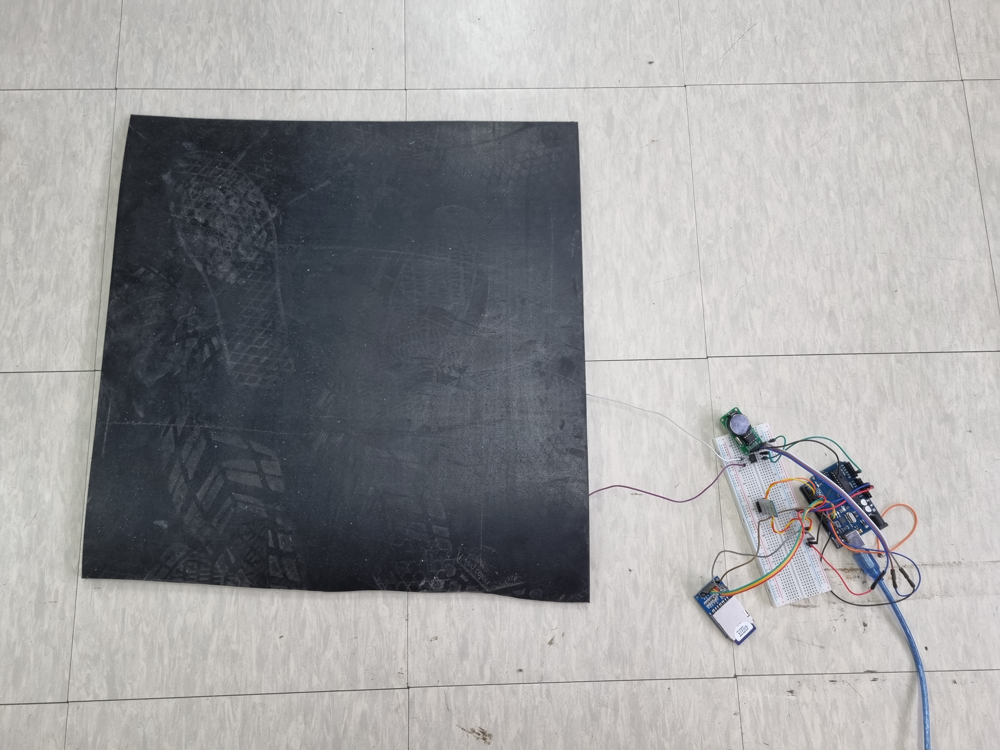
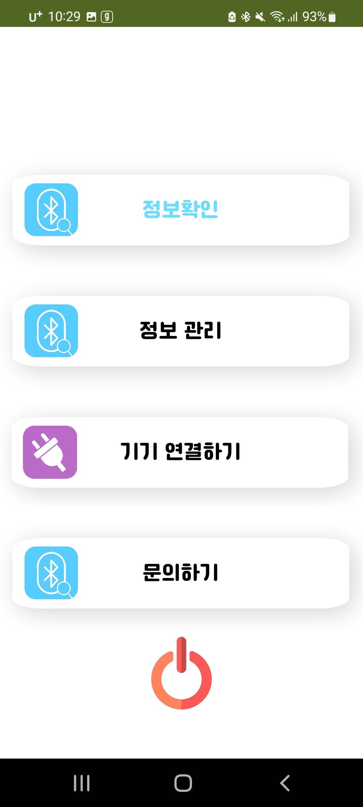
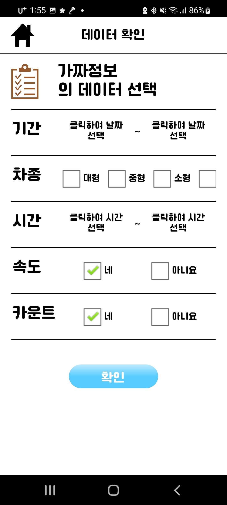
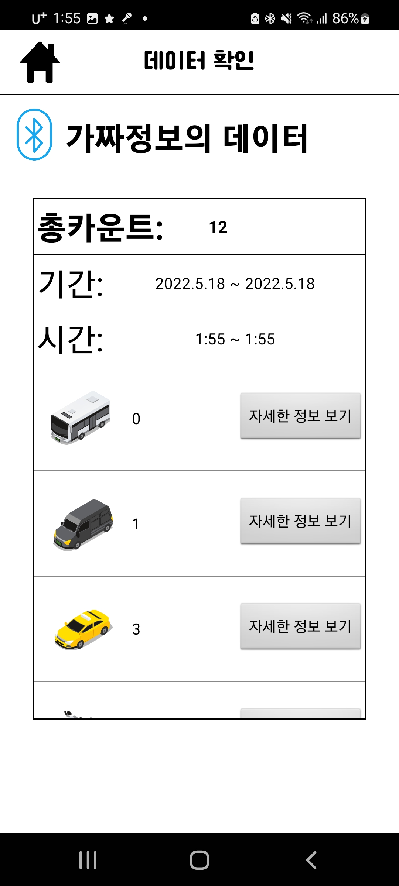

인력·설치 비용이 크고, 수집한 자료를 다시 집계해야 했습니다.
CAPSTONE DESIGN · TEAM LEADER · EMBEDDED SYSTEM
마찰전기 신호를
교통량 데이터로 바꾸다
차량 통과를 모사한 센서 신호를 계수하고 차동 데이터와 시간 정보를 함께 저장한 뒤, 스마트폰에서 원하는 기간의 기록을 조회할 수 있도록 센서·회로·펌웨어·앱을 하나의 시제품으로 통합했습니다.
- 기간
- 2022.03 — 2022.06
- 역할
- 팀장·하드웨어·소프트웨어
- 데이터 흐름
- 센서 → RTC·SD → Bluetooth
- 사용자 화면
- MIT App Inventor
수작업 교통량 조사를
휴대형 장치로
교통량 조사는 많은 인력과 시간이 필요하고, 매립형 장비는 설치와 유지 비용이 큽니다. 필요한 구간에 간편하게 설치해 데이터를 계속 수집할 수 있는 장치를 목표로 정했습니다.
기획 단계에서 팀원 전원이 함께 인력 조사, 도로 매립형 센서와 영상 기반 조사 방식의 한계를 비교했습니다. 차량 하중을 전기 신호로 바꾸는 소형 센서와 저가형 임베디드 보드를 결합하면 설치 부담을 낮추면서 시간대별 데이터를 자동으로 남길 수 있다고 판단했습니다.
차량 하중으로 발생하는 전기 신호를 이벤트로 검출하도록 했습니다.
현장에서 장치를 회수하지 않고 스마트폰으로 결과를 확인하도록 구성했습니다.
센서 원리에서
입력 신호까지
압력 입력을 전압으로 읽는 회로부터 확인한 뒤, 담당교수님께 지원받은 마찰전기 대전열 양 끝단의 재료로 팀원들과 소자를 제작해 최종 입력원으로 정했습니다.
초기에는 압전·압력 센서 방식과 마찰전기 방식의 발전량과 적용 가능성을 함께 검토했습니다. Arduino 입력 코드를 작성해 압력에 따른 신호 검출을 먼저 확인하고, 지원받은 재료로 제작한 마찰전기 소자는 오실로스코프와 정밀 계측 장비를 이용해 실제 출력 신호가 발생하는지 확인했습니다.


한 번의 통과를
기록으로 남기는 구조
센서 이벤트가 발생한 순간부터 스마트폰에 집계 결과가 표시될 때까지의 데이터 흐름을 먼저 설계하고 각 기능을 순서대로 연결했습니다.
01신호 검출·계수기준값을 넘는 센서 입력을 차량 통과 이벤트로 판단
02시각 결합RTC(Real-Time Clock)에서 날짜와 시간을 읽어 카운트에 연결
03로컬 저장센서 차동 데이터와 시간·누적 카운트를 SD(Secure Digital) 카드에 기록
04무선 조회요청 시 저장 데이터를 Bluetooth로 앱에 전달

센서와 저장·통신을
하나의 장치로
Arduino를 중심으로 센서 입력, RTC 시각 정보, SD 카드 저장과 Bluetooth 통신 모듈을 결합해 독립적으로 기록하고 필요할 때 조회할 수 있는 시제품을 만들었습니다.
모듈별 동작을 따로 확인한 뒤 센서 입력과 시간 기록, 데이터 저장, 스마트폰 전송을 하나의 실행 흐름으로 통합했습니다. 차량 통과를 모사한 입력이 발생하면 센서의 차동 데이터와 카운트·발생 시각이 기록되고, 사용자가 연결했을 때 저장된 데이터를 읽어 전송하도록 구성했습니다.


저장 데이터를
앱에서 조회하다
MIT App Inventor로 Bluetooth 연결부터 조회 조건 선택, 집계 결과 표시까지 현장 사용 순서에 맞춘 화면을 구현했습니다.
앱에서 장치를 연결한 뒤 날짜와 시간 범위를 지정하고, 저장된 기록을 불러와 전체 카운트와 분류별 결과를 확인하도록 구성했습니다. Arduino가 SD 카드 기록을 읽어 Bluetooth 요청에 응답하도록 전송 형식을 맞추고, Firebase와 연동한 App Inventor 화면에서 날짜·시간 범위와 분류 조건에 따라 결과를 표시했습니다.




팀장으로 맡은
통합 범위
자료조사는 팀원 전원이 함께 수행했습니다. 저는 팀장으로서 공동 조사부터 하드웨어 검토, 소프트웨어 개발과 통합 검증에 참여했으며, 마찰전기 원리 소개와 Blender 프로젝트 소개 영상 2편도 직접 제작했습니다. 각 역할의 결과가 하나의 시제품과 발표 자료로 이어지도록 전체 과정을 조율했습니다.
구현 결과
- 차량 통과를 모사한 센서 입력을 이벤트로 검출하고 누적 카운트로 변환했습니다.
- 센서 차동 데이터와 RTC 시각·카운트를 SD 카드에 함께 저장하도록 구성했습니다.
- Bluetooth 요청에 맞춰 저장 기록을 읽고, 앱에서 기간별 전체 카운트를 확인하는 흐름을 완성했습니다.
- 전체 프로젝트 영상 가운데 마찰전기 원리 소개 영상과 Blender 프로젝트 소개 영상, 총 2편을 직접 제작했습니다.
차종·속도·중량 구분은 차동 데이터의 전압 크기를 활용한 확장 목표와 앱 조회 항목으로 설계했습니다. 이 페이지에서는 보유 자료로 확인되는 센서 계수, 차동 데이터·시각 기록, 저장과 Bluetooth 조회 범위를 구현 결과로 구분해 정리했습니다.